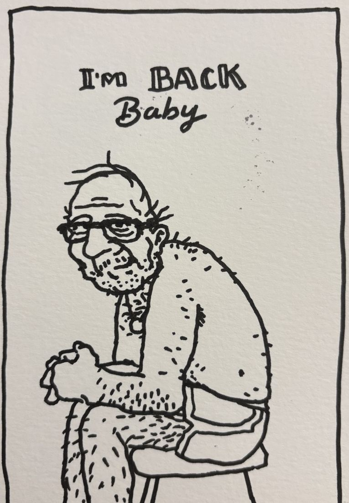
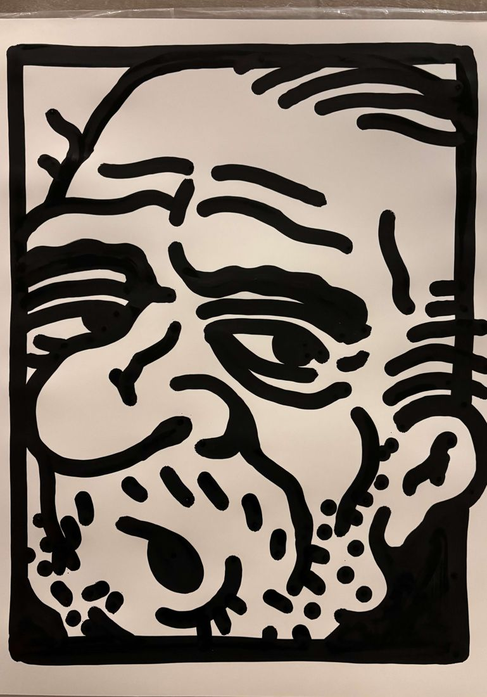
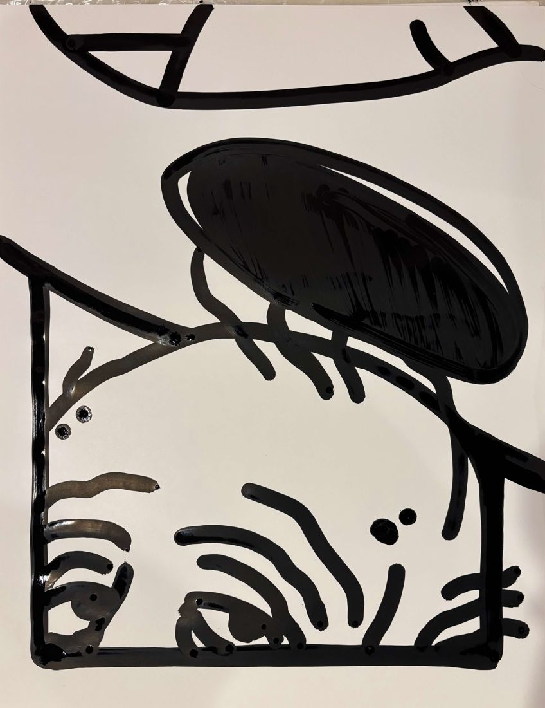
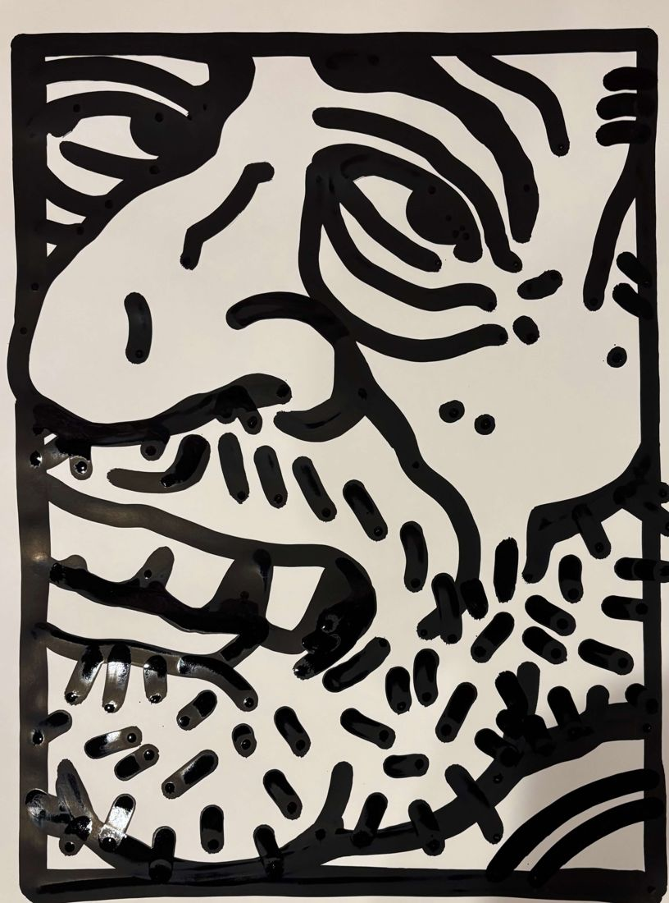
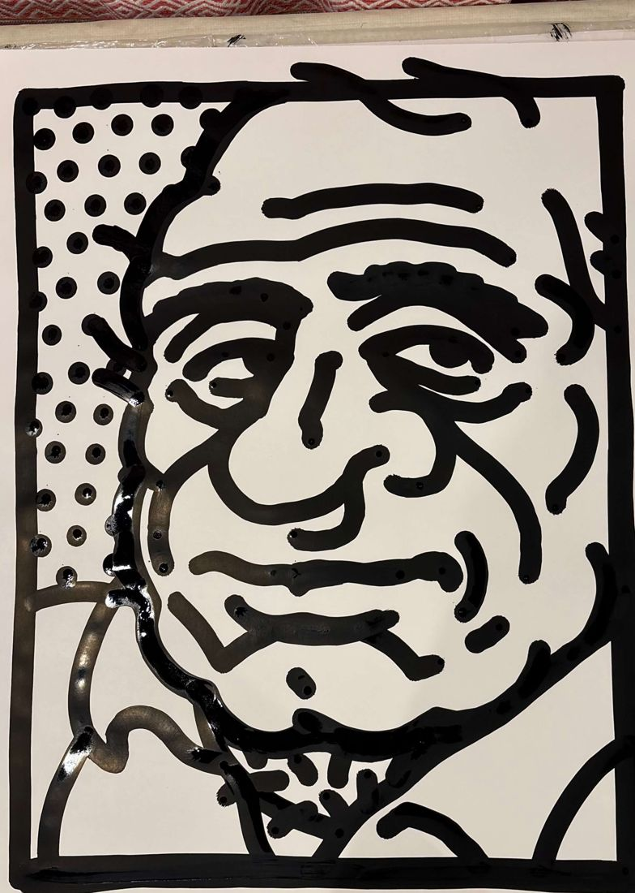
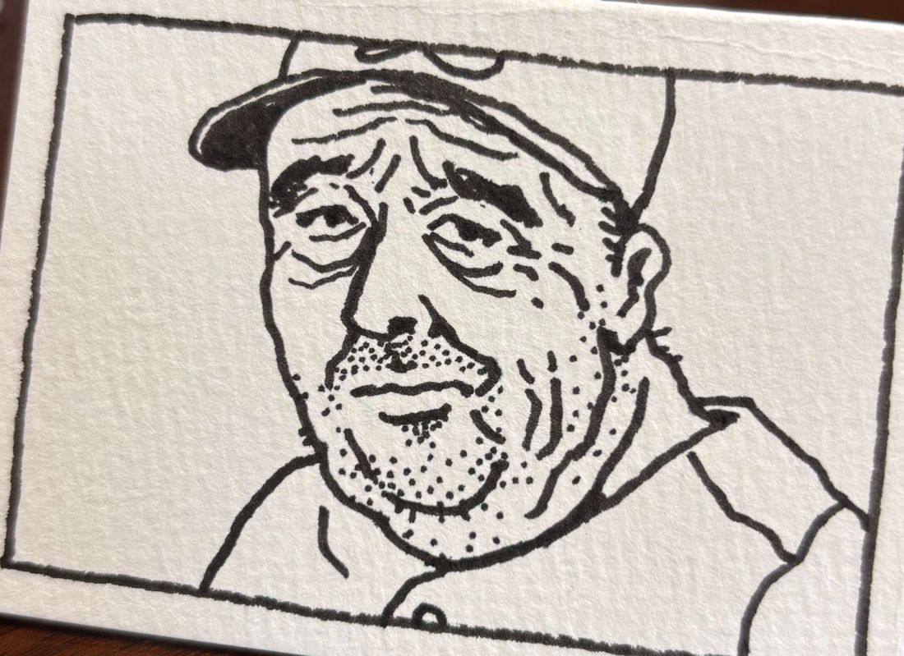
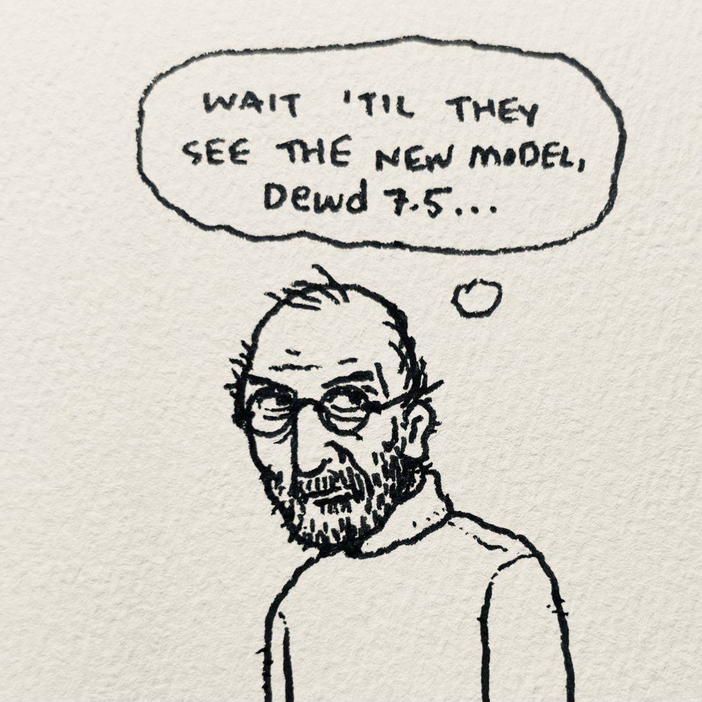

Local Artist Who Draws Bald Dewds Uses $60K to Draw More Weird Guys
Experts baffled. Hairlines continue to recede. Sahil Lavingia "has no regrets."
Experts baffled. Hairlines continue to recede. Sahil Lavingia "has no regrets."

In a move analysts are calling "bold" and "honestly kind of inspired," Gumroad has named Derrick Kempf a Creator-in-Residence, handing over $60,000 so the artist can draw more weird balding guys full-time.
"Honestly, I love drawing them. They make me giggle every single time," Derrick said from the dinner table.
Sources close to the artist say the obsession began in 2003, when these curious characters began to appear on everything. Since then, Derrick has drawn an estimated 1,462 balding men, none of whom have asked to be drawn.
Reached for comment, the guys offered none. They are drawings.

One (1) man, balding, visibly concerned about it. Ink on paper, 2026. Serious inquiries only.

Hairline. Last seen 2019. If found, do not return. He's doing fine.

Guy seeks remaining hair. Must be patient.

Comb, never used. Owner no longer needs it.

An unnamed local outfielder stunned fans Tuesday night by stepping to the plate bare-headed, claiming the shine off his scalp "throws pitchers off." He went 3-for-4 with a double.
League officials are reviewing whether a scalp counts as equipment. The player declined to comment but was later seen polishing it in the dugout.
"Why does he only draw balding guys?"
— Concerned Reader
Editor's reply: [Your honest answer, or a funnier one.]
With $60,000 and 12 uninterrupted months, Derrick plans to finish his book, host as many art shows as possible, release all new prints and apparel in the dewd.cool shop, and support and inspire as many artists as possible. Analysts project 10,000 new guys, working out to roughly $17 per guy.
"Cheaper than a hair transplant," one economist noted.
I love drawing by hand. The ink on paper is no match for anything that can come from starting on the computer first. Especially when it comes to dewds. Curious characters that all remind me to keep it loose and trust my gut. They also remind me to accept the little quirks and hairs that may feel out of place, but end up making it special.
Also, we should make some art together. Your sketches and paintings are so rad. I'd love to invite you over to our neck of the woods to make something cool.

Contact the Dome. The artist is standing by.